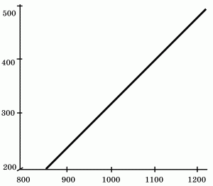
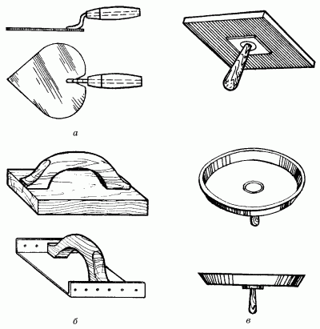
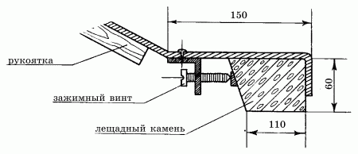

Оштукатуривание стен.

К оштукатуриванию стен прибегают тогда, когда на их поверхности имеются значительные дефекты, неровности, трещины и т. п. Если оштукатуривание проводится на высокопрофессиональном уровне, то порой не требуется каких-либо дополнительных способов отделки, например шпаклевания. После оштукатуривания стены можно за-грунтовать, а затем окрасить. В зависимости от того, какие отделочные работы предполагается провести после нанесения штукатурки, выполняют высококачественное, улучшенное и простое оштукатуривание. В первом случае после нанесения штукатурки стены окрашивают, во втором – оклеивают обоями, а в третьем – шпаклюют.
Материалы для оштукатуривания стенДля оштукатуривания стен, а также для ремонта ранее оштукатуренных поверхностей обычно применяют растворы, представляющие собой смесь вяжущего вещества с заполнителем и обычной водой. В качестве вяжущих веществ используются цемент, известь, гипс и глина.
Если вы приобрели все необходимые для оштукатуривания материалы заранее, не забывайте о том, что хранить их нужно в сухом помещении.
Вяжущие веществаГлина – это землистая минеральная масса, которая при смешивании с водой может образовывать пластичное тесто. После высыхания глина сохраняет любую форму без образования трещин и усадки, а после обжига становится столь же прочной, как и камень. Кроме того, глина обладает свойством прекрасно поглощать и удерживать влагу.
Жирной называется богатая глинистыми минералами глина, а тощей – глина, в составе которой имеется очень большое количество песка. Для того чтобы немного снизить жирность глины, к ней добавляют песок, шлак, сечку соломы и другие так называемые отощающие материалы. Белая глина, именуемая также каолином, содержит значительную примесь каолинита.
Качество глины зависит от ее пластичности, и его можно проверить на ощупь. Если вы держите в руках жирную глину, то ее комочек напоминает кусочек увлажненного мыла или ломтик сала. Качество глины можно определить и другим способом. Сделав из глины жгутик длиной 15 см и толщиной 2 см, нужно потянуть его за оба конца одновременно. Тощая глина плохо растягивается, и в месте разрыва жгутика образуются неровные края. Жгутик из пластичной глины, плавно вытягиваясь, постепенно истончается и в конце концов разрывается, образуя в месте разрыва острые зубцы.
От того, какие примеси входят в состав глины, зависит ее цвет. В красный, желтый и бурый цвета окрашена глина с примесью оксида железа и оксида марганца, а в черный – с органическими примесями.
Смешав глину с водой, можно получить пластичное глиняное тесто, а добавив туда песок – глиняный раствор. И раствор, и глина с течением времени станут твердыми за счет испарения воды, приобретая одновременно прочность камня. Однако эта твердость только кажущаяся: если опустить глиняное тесто в воду, можно увидеть, как оно быстро размокает. Если же воды немного, то мы снова получим глиняное тесто.
Глину применяют в качестве вяжущего материала для оштукатуривания внутренних и наружных стен помещений. При кладке печей и труб без глиняного раствора также не обойтись: там, где все другие вяжущие составы теряют свои свойства после нагревания, глина становится только прочнее.
Строительный гипс, или алебастр, представляет собой порошок беловато-серого цвета. Алебастр получают путем обжига природного гипсового камня при температуре от 150 до 170° С. Если гипс смешать с водой, он быстро начинает затвердевать, а схватывание раствора начинается уже через 4 минуты и длится не более 30 минут. Для того чтобы схватывание продолжалось дольше, в раствор алебастра следует добавлять вещества, замедляющие этот процесс, например раствор клея животного происхождения.
Добавленный в известковый раствор гипс ускоряет схватывание и увеличивает прочность состава. Такой раствор называется известково-гипсовым. При схватывании и затвердении гипс значительно увеличивается в объеме, что имеет очень важное практическое значение во многих строительных работах.
Строительная известь, которая применяется для приготовления строительных растворов, по способности к затвердению делится на гидравлическую и воздушную. В первом случае известь затвердевает и в воде, и на воздухе, а во втором, как это видно из названия, только на воздухе. Известь получают с помощью обжига известняков в шахтных печах. После обжига получается негашеная известь – известь-кипелка, или комовая. Для гашения извести ее заливают водой из расчета 35 л воды на 10 кг извести. В процессе гашения известь начинает «кипеть», рассыпаясь на мелкие части, после чего она заметно увеличивается в объеме. По времени гашения различают быстрогасящуюся (около 8 минут), среднегасящуюся (около 25 минут) и медленногасящуюся (более получаса) известь.
Гашеную известь называют пушонкой. Для того чтобы все частицы извести погасились, ее нужно выдержать около 2–3 недель под закрытой крышкой. По истечении указанного срока остается тонкодисперсная масса с содержанием воды не более 50 %.
Высыхая, гашеная известь твердеет в результате взаимодействия с содержащимся в воздухе углекислым газом, а также за счет испарения воды. После высыхания известковое тесто дает большую усадку, и для ее предотвращения в тесто нужно добавлять песок.
В малярных работах используется известь только первого сорта, причем в небольших количествах. Кроме того, гасить ее нужно непосредственно перед применением. От скорости гашения извести зависит и ее качество.
Окрашивание составом, приготовленным на основе извести, имеет значительное преимущество: известковые краски успешно могут применяться для отделки сырых и холодных помещений, поскольку устойчивы к воздействию влаги и низких температур. Поэтому вы можете приступать к работе с такими красками и в зимнее время года. Но вместе с тем у этих материалов есть и недостаток: известь – едкая щелочь, поэтому ее можно использовать только для приготовления щелочестойких пигментов. Кроме того, некоторые щелочестойкие пигменты могут разрушаться под воздействием извести, поэтому лучше всего предварительно проверить их на устойчивость к извести в отдельной небольшой емкости.
Цемент – гидравлическое (твердеющее и в воде, и в воздухе) вяжущее вещество, которое получают способом измельчения клинкера и некоторых минеральных добавок. Для приготовления строительных растворов используют шлакопортландцементы, пуццолановые портландцементы, расширяющиеся и безусадочные цементы, глиноземистый цемент и т. п. Самыми распространенными считаются глиноземистый цемент и портландцемент.
Глиноземистый цемент получают из глинозема и извести, сплавленных при температуре 1400° С. Получившуюся таким образом массу дробят на куски, которые, в свою очередь, измельчают в порошок на трубных мельницах. Марочную прочность (глиноземистый цемент выпускают марок 400, 500, 600) цемент набирает через 3 дня.
Портландцемент представляет собой порошок серо-зеленого цвета. Получают его путем обжигания глины и мела при температуре 1500° С. После этого цементный клинкер (а именно так называется полученная масса) размалывают на специальных мельницах, одновременно добавляя в него различные активные и неактивные (инертные) добавки – шлаки, гипс, кварцевый песок.
Если цемент растворить водой, то спустя непродолжительное время он застывает, превращаясь в твердое вещество наподобие камня. Портландцемент выпускают марок 400, 500, 600 и 700.
По сравнению с такими вяжущими, как глина и известь, цемент схватывается гораздо быстрее. Схватывание наступает уже спустя 35–40 минут, а окончательное схватывание – не позднее 12 часов в зависимости от марки цемента. Можно ускорить процесс твердения, если добавить в цемент теплой воды. И наоборот, применение холодной воды отодвигает на некоторое время схватывание разведенного цемента.
Марка цемента зависит от тонкости помола. В том случае, если марка цемента вам неизвестна или у вас появились какие-то сомнения, можно ориентировочно определить ее по плотности цемента. Она снижается при длительном хранении: за 6 месяцев – на 25 %, за 1 год – на 40 %, за 2 года – на 50 % (рис. 1).

Рис. 1. Определение марки цемента по его плотности.
Также качество цемента можно определить следующим способом: возьмите некоторое количество сухого вещества в руку и сожмите его. Цемент хорошего качества высыпается сквозь пальцы, а плохого – образует в руке маленькие частицы размером с горошину.
Если вы решили покупать цемент заранее (чего, кстати, лучше не делать) и предполагаете хранить его некоторое время, лучше пересыпать цемент из бумажных пакетов, в которых он продается, в полиэтиленовые мешки. Хранить цемент нужно в сухом месте, недоступном солнечным лучам.
ЗаполнителиЗаполнители бывают природными и искусственными. К природным заполнителям относятся песок, каменная крошка и гравий, к искусственным – опилки, керамзитовый песок и топливный шлак.
Опытные штукатуры предпочитают в своей работе использовать только природные заполнители, а именно песок, лучше всего речной, поскольку он считается самым чистым, в то время как горный или овражный песок часто бывает смешанным с глиной. Если же нет возможности приобрести речной песок, то горный или овражный нужно тщательно промыть водой. Точно так же необходимо промыть пресной водой и морской песок, содержащий большое количество морских солей, которые могут разрушить вяжущие вещества в растворе.
В зависимости от величины зерен все виды песка подразделяются на мелкий (около 0,5 мм), средний (0,5–2 мм) и крупный (2–7 мм). Для внутренней отделки стен наиболее пригодным считается мелкий и средний песок, поскольку его применение позволяет добиться идеально ровной поверхности. В этом случае можно избежать дополнительных затрат на шпаклевание поверхности стены (об этом будет рассказано ниже).
В качестве заполнителя очень редко используют шлак, поскольку в нем содержатся вещества, снижающие прочность раствора. Для того чтобы удалить эти вещества, перед дроблением и просеиванием шлак необходимо выдерживать в отвалах не менее 4 месяцев. Шлак, пемза и древесный уголь – очень легкие заполнители, поэтому их чаще всего используют для внутренней отделки с целью утепления помещений.
Приготовление растворовДля оштукатуривания стен чаще всего используют растворы, приготовленные на цементно-песчаной или извест-ковой основе. В последние годы особую популярность получили сухие смеси типа «Бетонит-ГБ», «Ротбанд», «Волма-слой» и др. Для того чтобы приготовить из них раствор, нужно всего лишь добавить в них воду. Однако воспользоваться этими дорогостоящими сухими смесями могут далеко не все; если поверхность стен имеет очень большое количество дефектов, то лучше всего использовать любой другой раствор, который более доступен по цене.
Раствор для штукатурки подготавливают в специальных деревянных ящиках либо, за отсутствием такового, в старом жестяном корыте или тазу.
Цементно-известковый растворДля приготовления раствора требуется:
– 1 часть цемента;
– 2 части известкового раствора;
– 7 частей песка.
Известковый раствор готовится очень легко: необходимое количество извести тщательно перемешивают с водой до получения тестообразной массы. Затем сухой цемент смешивают с песком и добавляют известковую массу. Если раствор получился слишком густым, в него можно добавить еще немного воды и песка, после чего снова тщательно перемешать.
Цементный растворДля приготовления раствора требуется:
– 1 часть цемента;
– 2–3 части песка в зависимости от его жирности.
Конечно, песок значительно увеличивает прочность раствора, но вместе с тем и снижает его пластичность, поэтому количество песка для приготовления раствора в домашних условиях не должно превышать трех частей на одну часть цемента.
В предназначенную для приготовления раствора емкость насыпают несколькими слоями цемент и песок, перемешивают, затем добавляют воду и еще раз тщательно перемешивают до получения однородной массы. Приготовленный раствор долго хранить нельзя: лучше всего его использовать не позднее чем через 1 час, поскольку он начинает застывать, а повторное приготовление раствора значительно снижает его свойства.
Известково-глиняный растворДля приготовления раствора требуется:
– 1 часть жидкого глиняного теста;
– 3–5 частей песка (в зависимости от жирности глины);
– 0,4 части известкового теста.
Глину, разведенную водой до тестообразного состояния, перемешивают с известковым тестом и постепенно добавляют песок.
Известково-глиняно-гипсовый растворДля приготовления раствора требуется:
– 1 часть гипса;
– 3–4 части известково-глиняной смеси.
В емкость для приготовления раствора сначала наливают воду, затем насыпают тонким слоем гипс и быстро перемешивают до получения однородной сметанообразной массы. В получившуюся смесь добавляют известково-глиняный раствор и снова тщательно перемешивают.
Инструменты для оштукатуривания
Рис. 2. Инструменты для оштукатуривания стен: а– штукатурный мастерок; б – «сокол»; в – терка.
Для оштукатуривания стен понадобятся следующие инструменты (рис. 2):
– стальные щетки;
– скребки;
– бучарда или зубчатка;
– штукатурный ковш;
– «сокол»;
– штукатурный мастерок;
– маховая кисть;
– полутер;
– терка;
– отрезовка;
– отвес.
Перед началом работ поверхности стен нужно очистить от загрязнений. Для этого необходимы стальные щетки различной величины и жесткости. Если необходимо удалить старые побелку, краску или обои, то потребуется использовать скребок треугольной формы, изготовленный из кровельной стали и закрепленный на деревянной ручке. Длина лезвия скребка должна быть не менее 14 см, а ширина – от 5 до 10 см.
Бучарда – тяжелый молоток весом около 1 кг, снабженный зубчиками. Он предназначен для нанесения насечек на поверхность стены, в результате чего раствор лучше схватывается с поверхностью. Для этих же целей используют и зубчатку – зубило с зубчиками на лезвии. Если у вас этих инструментов не имеется, вместо них можно использовать и обычный молоток.
Штукатурный ковш необходим для того, чтобы сэкономить время, предназначенное для проведения работ, и избежать излишней физической нагрузки, то есть периодиче-ских наклонов в сторону емкости с раствором. Для этой же цели используется и «сокол»– деревянный щит размером 40 х 40 см с закрепленной в центре его нижней части (перпендикулярно к плоскости) ручкой. Этот инструмент можно сделать самостоятельно из куска фанеры толщиной 1–2 см.
Без штукатурного мастерка при проведении отделочных работ не обойтись. Им можно перемешать раствор, затем нанести его на поверхность стены и, наконец, тщательно растереть. Мастерок состоит из стального лезвия длиной 22 см и шириной 17 см, закрепленного на деревянной ручке.
Полутерок (12 х 70 см) требуется для разравнивания раствора на поверхности. Обычно его изготавливают из дерева хвойных пород. Для затирки раствора используют терку: внешне она напоминает полутерок, но отличается от него меньшим размером (12 х 10 см).
Отрезовка – тот же самый штукатурный мастерок, только меньших размеров. Применяется в основном для мелких работ.
Плоскость поверхности при нанесении штукатурки проверяется с помощью прав€ила – длинной алюминиевой рейки сечением 2 х 10 см и длиной от 1,5 до 3 м, хотя чаще всего пользуются только 2-метровой рейкой. Некоторые мастера предпочитают применять деревянные рейки.
Порядок работыПеред началом работы стену необходимо очистить от пыли, грязи, возможных излишков кладочного раствора. На новую бетонную стену с помощью зубчатки или обычного молотка наносят насечки. Дело в том, что на гладкой поверхности стены раствор будет ложиться неровно, а насечки обеспечат лучшую сцепляемость раствора с поверхностью. На 1 м поверхности стены должно быть не менее 200 насечек.
В том случае, если оштукатуривание приходится выполнять на каменной или кирпичной стене нового строения, швы между кирпичами нужно будет несколько углубить (эти выемки также необходимы для лучшего сцепления раствора с поверхностью стены), затем очистить их и как следует увлажнить.
Значительно труднее подготовить деревянные поверхности. Прежде всего нужно немного надколоть те доски, из которых построена стена (это делается для того, чтобы впо-следствии они не покоробились). Затем сверху следует набить дранку, сделанную из фанерных обрезков или лучинок, ширина которых составляет 15 мм, а толщина – 4 мм. Дранку набивают на стену в виде диагональной решетки.
Вместо дранки можно использовать также и сетку-рабицу, набив ее на стену сквозь фанерные обрезки так, чтобы между сеткой и стеной оставался небольшой зазор шириной не менее 2,5 мм.
Штукатурка, независимо от того, какое качество работы предполагается – простое, улучшенное или высокое, состоит из трех слоев, каждый из которых наносится после того, как окончательно высохнет предыдущий слой. Растворы на цементной основе схватываются обычно через 2, максимум – через 6 часов, известково-гипсовые – через 6—15 минут, а известковые можно считать схватившимися, как только они побелеют.
Для оштукатуривания подготовленных поверхностей необходимо нанести на стены три слоя раствора – обрызг, грунт и накрывку.
1. Обрызг – первый слой штукатурного состава толщиной не менее 3 мм и не более 5 мм. Если набрызг наносится на стену вручную, то его консистенция должна быть средней – и не густой, и не жидкой. Обрызг наносят либо на всю поверхность стены, либо только на какую-то ее часть.
2. Толщина второго, грунтового слоя зависит от того, имеется ли в составе штукатурки гипс. Так, если гипс отсутствует, то толщина наносимого слоя должна составлять 90—120 мм, если же присутствует – 70–80 мм. Замешанный в виде теста раствор наносится на стену вручную.
Перед тем как вы начнете оштукатуривать поверхность стены, ее нужно очистить от пыли и обильно увлажнить водой. Затем, спустя 1–2 минуты, поверхность загрунтовывают в несколько слоев, аккуратно выравнивая и устраняя различные дефекты. В зависимости от толщины штукатурки грунт наносят 2–3 раза.
3. Консистенция третьего слоя (накрывки) сметанообразная. Толщина наносимого слоя должна составлять около 2 мм. К накрывке прибегают после того, как подсохнет грунтовочный слой. Следует с особой тщательностью подходить к подготовке раствора для накрывки: материалы для нее лучше всего просеять сквозь мелкоячеистое сито и точно отмерить; только в этом случае можно получить однородную массу без комочков.
Накрывку выполняют таким же раствором, из которого выполнены два предыдущих слоя. Следовательно, штукатурку на цементной основе накрывают цементным раствором, а на известковой – известковым раствором.
Раствор наносят на стену с помощью штукатурного мастерка и штукатурного ковша (некоторые мастера-отделочники предпочитают использовать вместо ковша «сокол»), в который выкладывают порцию раствора, затем забирают его мастерком и набрасывают на стену. Сметанообразный раствор лучше всего набирать в штукатурный ковш, а раствор более густой консистенции – в «сокол».
Раствор очень удобно брать концом мастерка, двигая его от края штукатурного ковша или «сокола» к его середине. Понаблюдайте за тем, как вы набрасываете раствор на стену: работать должна только кисть руки. Старайтесь не делать слишком сильных взмахов, иначе раствор будет разбрызгиваться. В любом случае следует помнить, что набрасывание раствора требует особых навыков, которые приобретаются со временем.
Толщину штукатурного слоя на ровных и кирпичных стенах следует делать относительно тонкой – около 4–5 мм. А вот толщина слоя на деревянных поверхностях должна составлять не менее 25 мм, в противном случае служащая в качестве арматуры дранка может покоробиться и деформировать штукатурку.
С помощью полутерка, прав€ила и «сокола» приступают к следующему этапу штукатурных работ – выравниванию поверхности. Особенно тщательно выравнивают грунт и накрывку. Не стоит забывать одно из главных условий работы: чем ровней и аккуратней нанесен первый слой – обрызг, тем легче будет наносить второй и третий слои и, соответственно, тем меньше окажется их толщина.
После того как поверхность стены максимально выровнена, приступают к дальнейшему этапу штукатурных работ – затирке, которая также состоит из двух этапов:
1) затирка, выполняемая вкруговую;
2) затирка вразгонку.
После того как накрывка схватится, с помощью терки, плотно прижатой к штукатурке, выполняют круговые движения против часовой стрелки. Если обнаружатся небольшие трещинки или впадинки на поверхности, следует немного ослабить давление на терку. Если же встречаются бугорки, то, напротив, терку нужно прижимать сильнее. По мере выполнения этих действий все выступающие дефекты будут срезаны ребрами терки, а впадины заделаны излишками раствора, который перемещается полотном терки. Накапливающийся на ребрах терки раствор время от времени необходимо удалять.
Как только круговая затирка будет закончена, результат проделанной работы может показаться неудовлетворительным: на поверхности стены будут явственно заметны кругообразные следы. Для их уничтожения непременно потребуется затирка вразгон. Перед началом затирки полотно терки необходимо очистить от раствора, затем плотно прижать к поверхности стены и выполнить прямолинейные движения. Если нужно получить идеально ровные стены, полотно терки следует обить любым плотным материалом, например фетром или войлоком.
На затертой штукатурке не должно быть раковин, пропусков, бугров и прочих дефектов. Чисто затертая поверхность стены потребует меньшего количества исправлений при выполнении малярных работ.
Вместо затирки штукатурку заглаживают с помощью гладилки – деревянного полутера, к полотну которого прибита или приклеена мягкая резина. Длина полутера составляет около 60 см.
Заглаживание применяют после того, как схватится накрывка. Лучше всего заглаживать стены в двух направлениях – сначала в вертикальном, а затем в горизонтальном.
Небольшие бугорки, не очень заметные глазу, можно загладить с помощью зачистки. Зачистка – удаление или сглаживание небольших выступающих бугорков на поверх-ности оштукатуренной стены. Эта работа проводится сразу же после подсыхания последнего слоя раствора.
Зачистку можно провести с помощью лещади (рис. 3) – специального приспособления, которое представляет собой обычный кирпич белого цвета. В этом же качестве можно использовать также пемзу или брусок из дерева твердых пород – таких, как секвойя или дуб. Зачистку проводят круговыми движениями с небольшим нажимом на брусок.

Рис. 3. Приспособление для лещади.
Оштукатуривание стен по маякамНачинающие штукатуры не всегда могут добиться ровной поверхности стен с помощью выравнивания. В таком случае следует оштукатуривать поверхность стены по маякам. Маяками называются сделанные из деревянных реек или раствора направляющие. Для того чтобы добиться ровной штукатурки, стены нужно провесить. Для этого на расстоянии 25 см от потолка и угла стены вбивают гвоздь таким образом, чтобы его шляпка отстояла от стены на толщину штукатурки (примерно на 20 мм). К шляпке этого гвоздя подвешивают отвес.
Второй гвоздь вбивают на расстоянии 25 см от пола так, чтобы его шляпка касалась шнура отвеса. Гвозди для первого маяка готовы. Точно так же вбивают гвозди во втором углу стены для второго маяка: 3-й наверху и 4-й внизу. Затем по вбитым гвоздям с 1-го гвоздя на 4-й, и со 2-го на 3-й натягивают шнур и внимательно осматривают, не касается ли он стены в каком-либо месте. Если касается, то одну пару гвоздей выдергивают и снова устанавливают по отвесу.
Если длина стены составляет 4–5 м, то в середине ее устанавливают еще 1–2 маяка. Для этого шнур натягивают на 1-й и 3-й гвозди, после чего вбивают 5-й и 6-й гвозди. По шнуру, натянутому на 2-м и 4-м гвоздях, устанавливают 7-й и 8-й гвозди.
После этого необходимо приложить прав€ило к шляпкам каждой пары и закрепить его в таком положении гвоздями. Зазор между стеной и прав€илом заполняют раствором. Как только раствор схватится, прав€ило снимают, предварительно постучав по нему (удары не должны быть сильными). На поверхности стены останется полоса раствора. Эта полоса называется маяком.
После этого наносят раствор между маяками, прикладывают прав€ило к маякам и, нажимая на него, ведут его снизу вверх, срезая при этом излишки раствора. На самих маяках делают насечки и замазывают их тем же раствором. Таким образом, благодаря использованию маяков можно получить ровную поверхность стены.
Вместо маяков из раствора иногда устанавливают и деревянные маяки. Для этого потребуются рейки, толщина и ширина которых составляет примерно 20 мм, а длина на 50 мм меньше высоты стены. Провешивание и набивку гвоздей выполняют точно так же, как и в предыдущем случае, но только по углам стены. Шнур натягивают по горизонтали, а под него подставляют рейки. Пространство между рейкой и стеной заполняют раствором, стараясь, чтобы шнур не прогибался при разравнивании под ним слоя штукатурки. Первые два слоя штукатурки наносят как обычно, затем маяки удаляют, а участки под ними замазывают раствором.
Оштукатуривание печейВозможно, у вас есть дача, на которой сохранилась печь, и вас интересуют вопросы, связанные с ее отделкой, ведь вертикальные поверхности печи должны выглядеть аккуратно. Существует два варианта решения проблемы: можно облицевать печь плиткой, а можно и просто оштукатурить. Второй способ гораздо легче и доступнее.
Прежде всего нужно подготовить внешнюю поверхность печи, удалив с нее старый глиняный слой. Затем следует расчистить кладочные швы так, чтобы образовались небольшие углубления (не менее 10 мм).
Следующий этап – натягивание сетки для упрочнения штукатурки. В зависимости от толщины штукатурного слоя используют два типа сеток – строби и рабицу. Строби – специальная штукатурная сетка с размерами ячеек 5 х 5 мм. Она выпускается в виде рулонов шириной 1 м и длиной 50 м. Изготовленная на стеклотканевой основе сетка такого типа предусматривает толщину слоя от 0,5 мм до 3 см. Рабицу – металлическую сетку с размерами ячеек от 5 х 5 до 20 х 20 мм – применяют в том случае, если толщина штукатурного слоя превышает 3 см.
Сетку натягивают, прибивая ее в швы небольшими гвоздями длиной 75 мм. Делать это следует очень осторожно, чтобы не нарушить кладку. В прежние времена перед оштукатуриванием печь хорошо протапливали, чтобы раствор ложился на горячую поверхность для лучшего схватывания штукатурки. Теперь этого можно не делать, поскольку в вашем распоряжении имеется сетка-строби, которая служит для профилактики образования трещин при схватывании раствора.
Перед началом работ поверхность печи обильно смачивают водой, затем наносят на нее жидкий слой раствора – обрызг. Для замешивания раствора понадобятся речной песок, цемент и клей ПВА. Толщина обрызга должна составлять около 5 мм.
Как только слой обрызга высохнет, сверху наносят второй слой – грунтовой. Чтобы приготовить раствор для грунта, необходимы следующие материалы:
– 4 части речного песка;
– 1 часть карьерного песка желтого цвета;
– готовая грунтовка типа «Оптимист» (ее цена вполне доступна каждому, а расход невелик – всего 1 л на 1 м).
Исходя из этого рассчитайте нужное количество грунтовки для печи. Следует заметить, что грунтовка необходима для лучшей сцепляемости раствора с основанием.
После того как грунт нанесен на поверхность печи, его выравнивают и затирают. Иногда после высыхания грунта на нем могут появиться еле заметные глазу трещинки. Их можно разрезать, смочить водой, замазать раствором и снова тщательно затереть.
Для оштукатуривания печей в основном применяют шамотную глину. Если позволяют средства, можно приобрести специальную штукатурку, предназначенную и для горячих поверхностей, – «Бетонит-ТТ».
Народные умельцы знают массу других рецептов приготовления растворов. Вот несколько вариантов.
Рецепт 1:
1 часть шамотной глины;
2 части речного песка;
0,1 часть асбеста № 6–7.
Рецепт 2:
1 часть шамотной глины;
2 части речного песка;
1 часть цемента;
0,1 часть асбеста № 6–7.
Рецепт 3:
гипсово-известковое тесто (1 часть гипса, 2 части извести);
1 часть песка;
0,2 части асбеста № 6–7.
Рецепт 4:
1 часть глины;
1 часть известкового теста;
2 части песка;
0,1 часть асбеста № 6–7.
Растворы подготавливают следующим образом. Глину развести с водой, в результате чего получится глиняное тесто. Это тесто процедить через сито, размер ячеек которого составляет 5 х 5 мм. Необходимое количество сухого просеянного песка смешать с глиняным тестом и асбестом, тщательно перемешать. Затем добавить цемент и снова перемешать до получения однородной массы. Получившуюся смесь развести водой до нужной консистенции. Использовать ее необходимо в течение 1 часа, не оставляя на следующий день.
В том случае, если в рецептуру приготовления раствора входит гипс, из песка, извести и асбеста нужно приготовить раствор. Гипс следует развести водой и постепенно, небольшими порциями добавлять к приготовленному раствору. Снова хорошо перемешать. На 2–3 части раствора требуется 1 часть густого гипсового теста. Не рекомендуется готовить слишком много раствора: через 4–5 минут он начинает затвердевать. Начинающим штукатурам, пока они не приобретут необходимые навыки, следует подготавливать не более 2 л раствора.
Для того чтобы армировать раствор, требуется асбест. Асбест сортов № 6 и 7 – самый мелкий и доступен практически каждому.
После высыхания штукатурки приступают к окрашиванию печи.
Дефекты оштукатуренных поверхностейИногда, если вы использовали неверное количество ингредиентов для приготовления растворов или же допустили некоторые неточности в процессе работы, на оштукатуренных поверхностях могут появиться следующие дефекты:
– трещины, образующиеся тогда, когда для приготовления растворов использовалась жирная глина или же сам раствор был плохо перемешан. Иногда трещины появляются от быстрого высыхания штукатурки при высокой температуре или сквозняках. Кроме того, трещины возникают и в том случае, если предыдущие слои еще не схватились, а сверху уже был нанесен новый слой. «Лучше предусмотреть, чем переделать» – такого принципа должны придерживаться и вы в своей работе. Не забывайте о том, что в процессе оштукатуривания стен толщина каждого слоя должна составлять не более 7 мм при использовании растворов на известковой основе и не более 5 мм, если раствор приготовлен на цементной основе. Отсутствие в ходе работы специальной штукатурной сетки, о которой уже говорилось выше, также способствует появлению трещин;
– желтые ржавые пятна, появляющиеся на оштукатуренной поверхности, вызваны просачиванием смолистых веществ из деревянных поверхностей. Удалить такие пятна очень трудно, практически невозможно, они будут проступать и через обои, и на окрашенной поверхности, поэтому придется отбить испорченный участок и нанести новый раствор;
– прочность штукатурного слоя очень низка; этот дефект связан с тем, что в процессе приготовления раствора использовались вяжущие вещества низкого качества или же цемент, срок годности которого истек. В этом случае всю работу нужно провести снова: отбить эту штукатурку и нанести новую;
– отслаивание штукатурки вызвано тем, что раствор наносился на сухую поверхность или на пересушенные слои ранее нанесенного раствора;
– небольшие бугорки с белым пятнышком посередине (штукатуры называют их дутиками) образуются тогда, когда в процессе работы использовалась невыдержанная известь, мелкие частицы которой начинают гаситься, попав в раствор. Эти частицы обладают способностью гаситься довольно продолжительное время, поэтому вам придется всю работу проводить заново: отбивать штукатурку с дутиками и наносить новый раствор;
– если раствор нанесен на слишком сырые поверх-ности стен, появляются вспучивания. В этом случае также нужно прибегнуть к кардинальным мерам: снять всю штукатурку и нанести новый раствор только после предварительного просушивания и последующего увлажнения стен.
Ремонт оштукатуренных поверхностейДаже если вы оштукатурили поверхность по всем правилам, с течением времени на ней появляются пятна или трещины, местами она отслаивается, особенно около плинтусов, окон и дверей. Среди причин, приводящих к этому, можно отметить влияние перепадов температур воздуха, увлажнение основания под штукатуркой, повреждения в результате удара или давления.
Прежде чем приступить к ремонту поверхности, нужно проверить, насколько прочно старая штукатурка скреплена с основанием. Для этого следует легко постучать кельмой по штукатурке. Если послышится дребезжащий звук, значит, сцепление непрочное. Определив такие места, необходимо удалить старую штукатурку.
Перед оштукатуриванием отбитого места нужно смочить его кромки водой для лучшего сцепления нового раствора со старой штукатуркой. Если границы старой и новой штукатурки недостаточно увлажнены, то после высыхания в этом месте образуются заметные трещины.
Для ремонта штукатурки потребуется известково-песчано-алебастровый раствор. Приготовить его можно следующим образом: сухой мелкозернистый песок смешайте с гашеной известью, затем добавьте воду и алебастр до сметанообразного состояния (алебастр добавляют непосредственно перед началом работы).
Состав известково-песчано-алебастрового раствора (в массовых частях):
– гашеная известь – 2;
– сухой просеянный песок – 5;
– алебастр – 1.
Этот раствор начинает быстро схватываться за счет алебастра, поэтому готовить его нужно небольшими порциями. Приготовленный раствор употребляют очень быстро – в течение 5–6 минут.
Нанести подготовленный раствор на отбитое место, разровнять и спустя некоторое время затереть деревянной теркой, особое внимание уделяя границе старой и новой штукатурки. Затирку производят круговыми движениями, одновременно немного захватывая и старую непо-врежденную штукатурку. Если вы разотрете это место недостаточно хорошо, то впоследствии места стыковок будут заметны на общей поверхности. Затирку нужно производить тогда, когда раствор все еще сохраняет пластичность, но и не пристает к самой терке. И терку, и оштукатуренную поверхность нужно периодически увлажнять. Затирку продолжают до тех пор, пока старая и новая штукатурка не станет единым целым.
Если старая штукатурка выполнена из цементно-песчаного раствора, ремонтировать ее нужно таким же раствором. Для этого 1 часть цемента смешивают с 5 частями песка и водой.
Потрескавшуюся штукатурку ремонтируют следующим образом. Появившиеся трещины немного расширяют и углубляют ножом, затем смачивают их водой и заделывают приготовленным раствором. Щели, образовавшиеся между плинтусом и стеной, расчищают, смачивают водой и заполняют раствором, удаляя его излишки. После этого также приступают к затирке.
Не следует допускать наслоения штукатурного раствора на окрашенные или зашпаклеванные поверхности. Кроме того, не нужно забывать, что древесина и штукатурка при изменении температуры по-разному изменяются в объеме, а значит, они не должны соприкасаться друг с другом. Если необходимо замазать места сопряжения дверных проемов со стеной, делать это придется исключительно алебастровым раствором.
При осадке дома даже прекрасно оштукатуренные поверхности начинают трескаться в местах соединения стен и перегородок. В этом случае нужно отбить старую штукатурку и с помощью гвоздей прикрепить строби – специальную штукатурную сетку с размерами ячеек 5 х 5 мм; она нужна для упрочнения штукатурки. Сетку следует установить в угол стыка стены и перегородки так, чтобы одна ее половина ложилась на стену, а другая – на перегородку. После этого нужно наносить раствор, как обычно.
Углы стен лучше всего ремонтировать с помощью быстро твердеющего алебастрового раствора. Для этого предварительно удаляется старый раствор, выскабливаются швы на глубину до 20 мм, поверхность стены смачивается водой и наносится свежий раствор. После разравнивания поверхности затираются стыки между старой и новой штукатуркой. Делать это нужно кистью, смоченной в воде, и теркой.
Если штукатурка отстала, но не отвалилась, совсем не обязательно ее отбивать. Можно лишь попытаться укрепить такую штукатурку. Для этого просверливают отошедший пласт и с помощью шприца заливают внутрь клей – КМЦ, ПВА, «Бустилат». После этого штукатурку с наружной стороны прижимают куском фанеры или картона.
Если штукатурка покрылась пятнами, не стоит переделывать работу заново: можно попробовать сначала отмыть поверхность раствором медного купороса. В эмалированной емкости нужно растворить купорос в 1 л воды, добавить в него мелко натертое мыло а затем, постоянно помешивая, – олифу. Все это снова тщательно перемешать и развести перед применением водой из расчета 1: 1. Полученной смесью обработать загрязненное место не менее трех раз. Если пятно не исчезло, следует закрасить этот участок цинковыми белилами.
Состав раствора медного купороса (в граммах):
– медный купорос – 200;
– хозяйственное мыло 40 %-ное – 250;
– клей столярный – 200;
– олифа – 40.
Пятна от жира можно попробовать удалить мыльным раствором, если не получится – бензином или скипидаром.